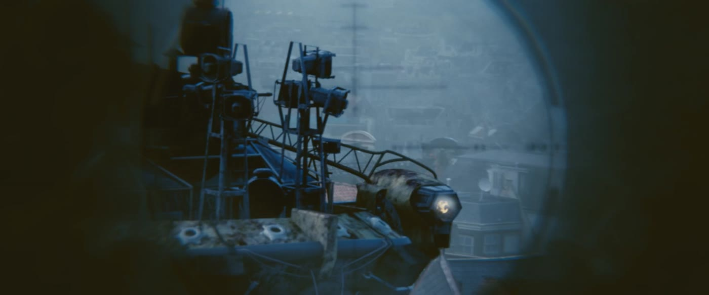
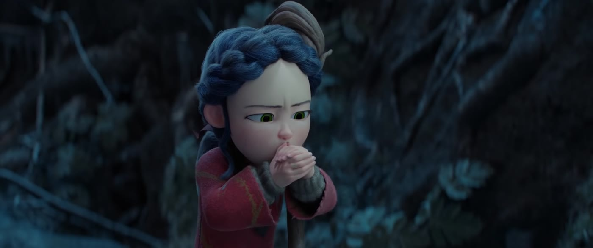

构图
构图 = 把画面里的东西摆在哪。好构图让观众一眼知道看谁、感受什么。
是什么
- 三分法：画面横竖各分三份，人物或视线放在交叉点附近，自然稳。
- 引导线：道路、栏杆、走廊把视线引向主体。
- 前景 / 框架构图：门框、窗户、树枝「框住」人物——有层次，或「被困」感。
- 视线空间（Look room）：人看向哪边，哪边多留空，才不憋。
- 对称构图：庄重、秩序，或刻意「不真实」。《人生切割术》（2022–）被切割的办公层几乎绝对居中、对称；楼外的生活松得多。韦斯·安德森也常用这一套，但是另一部片的口味。
- 负空间：大面积留白，突出孤独或压迫。


影像例子
推荐拉片镜头
- 《人生切割术》（2022–）：被切割的办公层几乎绝对居中、对称。
- 《寄生虫》（2019）：楼梯的线条把人往下带。
- 《爱乐之城》（2016）开场公路歌舞：人群沿着匝道铺开。
只写片名和场面。分钟数随修复版和网络拷贝变化，没有对某一份文件逐帧核对，所以不标时间点。
为什么重要
构图是「无声的导演说明」。人贴边、头顶顶天、或被门框卡住——观众还没听台词，已经不安了。
怎么用
- 对话：给说话者留视线空间；反应镜头同样注意。
- 想拍孤独：人很小 + 大片负空间，或框架构图把人关起来。
- 给 AI 写提示词时，可直接写：rule of thirds、leading lines、framed by doorway、lots of negative space。
练一练
去 FILMGRAB 或你自己的镜头库，找 5 张剧照，用一句话写出它的构图手段和情绪。
一句话记住：构图先回答：观众第一眼该看哪里？第二眼该感受到什么？